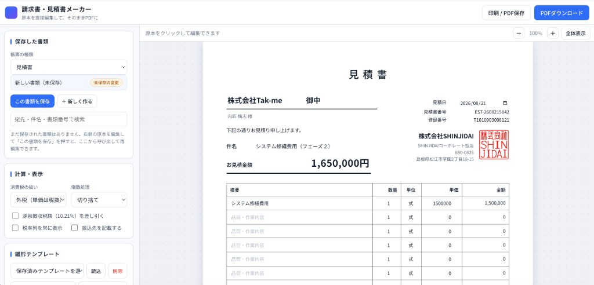
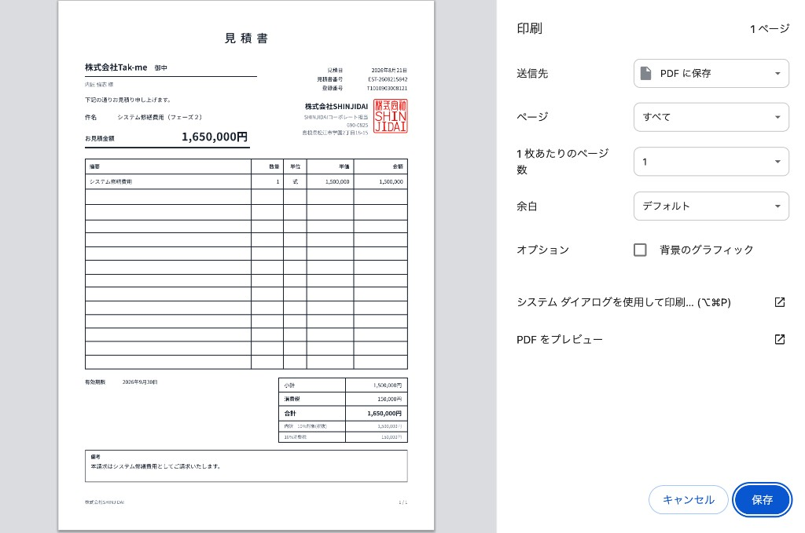

PHASE 03
見積・契約
スコープ・成果物・検収・知的財産・保守の扱いを、契約書・見積書・仕様書で明確化します。
見積書をつくる
請求書・見積書メーカー で作ります。雛形を直接編集してPDFで出せます。社印と登録番号は入っているので、宛先・件名・内訳・有効期限を入れ替えるだけです。入力内容はブラウザ内にだけ保存されます。
- 件名は「システム開発費用（フェーズ1）」のように、段階が分かる書き方にする
- 内訳は「一式」で終わらせず、下の表の項目に分けて並べる
- 備考に、前提・除外・やり直す条件を書く（次の見出し）


摘要に並べる行
第1段階の範囲だけを積みます。第2段階は参考金額か、別見積にします。1行「一式」で出さず、この単位に分けます。
| 摘要 | 単位 | 何を入れるか |
|---|---|---|
| 要件定義・設計 | 式 | 要件定義書と機能一覧を作る分。02をやってから見積る場合は、ここを0にして別途にする |
| 画面開発 | 式 | 要件定義書の「やること」を1行ずつ。画面・帳票ごとに分ける |
| データ移行 | 式 | 移す作業、中身の突き合わせ、やり直しの分。件数を書く（例：既存顧客3,000件） |
| 検証・検収対応 | 式 | 検証環境の準備、検収での指摘対応 |
| 打ち合わせ・報告 | 式 | キックオフ、途中の報告、資料づくり |
| 本番切替・操作説明 | 式 | 権限の設定、切替作業、操作説明、初日の立ち会い |
| 予備 | 式 | 未確認が残っている分。0にしない未確認が多い案件ほど厚くする |
| 保守 | 月 | 開発の行に混ぜない。月額として別の行にするか、別見積にする |
修繕・改修の案件も同じです。「システム修繕費用 一式」だけで出すと、あとで「どこまで直すのか」でもめます。直す対象を摘要に書きます（例：システム修繕（帳票出力の不具合1件・表示の調整3件））。
見積書のその他の欄
| 欄 | 書き方 |
|---|---|
| 件名 | 「○○システム開発費用（フェーズ1）」のように、段階が分かる書き方にする |
| 数量・単位 | 基本は「1 式」。人日で出す場合は単価も人日に合わせる |
| 消費税 | 外税（単価は税抜）で作る。端数は切り捨て |
| 有効期限 | 発行から1か月を目安に入れる。空欄にしない |
| 備考 | 前提・除外・やり直す条件を書く（次の見出し）。支払い条件と請求のタイミングもここ |
見積書に必ず書くこと
前提
どの版の要件定義書を前提にしているか。お客様側の作業と、その期限。
除外
今回やらないこと。第2段階に送るものは「改めて見積」と書く。
やり直す条件
範囲が増えたとき、つなぎ先が変わったとき、移すデータの中身が想定と違ったとき。
この3つが空欄の見積書は出しません。あとで「言った / 言わない」になる場所は、ほぼここです。
契約で決めること
案件ごとに決め、契約書・見積書・仕様書のどれかに必ず書きます。
| 項目 | 決める中身 |
|---|---|
| ソースコードの納品 | 渡す範囲、ドキュメント、ビルド手順の有無 |
| 著作権・知的財産 | 新規開発部分、既存資産、第三者コンポーネントの権利 |
| 外部ライブラリ | 採用技術とライセンス上の留意点。重要な依存は納品物に含める |
| アカウントの名義 | サーバー・ドメイン・SaaS・アプリストアを、お客様名義か当社名義か |
| 契約終了時のデータ | 渡す形式、手順、保管期間 |
| 他社への引き継ぎ | コード、設計、環境情報、運用手順のどこまでを渡すか |
| 検収と保守 | 合格の条件（02の完了定義）と、納品後に直す範囲 |
次に進む合図
- 見積の範囲と、要件定義書が一致している
- 前提・除外・やり直す条件が書いてある
- 発注書、契約書、発注のメールなど、事実が残っている
- キックオフMTGで決めた目的・画面数・権限数と、見積の範囲が合っている
口頭の「進めて」だけでは作り始めません。急ぐときは、第1段階だけ先に契約します。